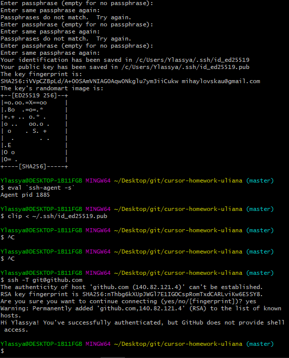

git config --global user.name-встановлює ім'я користувача.
git config --global user.email-встановлює адресу електронної пошти користувача.
git init-ініціює пустий репозиторій в поточній директорії.
git status-перечисляє всі нові або змінені файли,які потребують фіксації.
git add– додаємо файли в коміт. Зазвичай використовується «.» або «*» для додавання усіх файлів. Щоб додати один файл – вказуємо його ім'я та розширення.
git commit-m– За допомогою цієї команди ми виконуємо «коміт» змін. Тобто, вказуємо, що поточний зліпок проекту потрібно зберегти.
git log-історія коммітів для поточної гілки.
git checkout-переключається на вибрану гілку і оновлює робочу директорію до її стану.
git branch-список іменованих гілок з показом вибраної гілки.
git push-пушим (або відправляємо) в репозиторій наші зліпки проекту.
git pull-команда для отримання змін з репозиторію.
git merge-вносить зміни з гілки віддаленого репозиторію в поточну гілку локального.
git clone-скачує репозиторій разом із всією історією його змін.
.gitignore потрібен, щоб приховати файли і папки від системи контролю версій Git.
git revert-безпечний спосіб скасувати операцію без втрати історії коммітов. Команда скасовує дії минулих коммітов , створюючи новий, який містить всі скасовані зміни. Ця команда корисна, коли ви вже запушили зміни в віддалений репозиторій, так як вона зберігає недоторканим вихідний комміт.
git reset-відміняє всі комміти після заданого, залишаючи всі зміни в робочій директорії.Вона має три основні форми виклику, --soft, --mixed, --hard.
git rebase-вносить зміни вказаної гілки в поточну гілку.
git cherry-pick-використовується для перенесення окремих коммітів з однієї гілки в іншу.
git stash-тимчасово зберігає всі незафіксовані зміни відслідковуваних файлів.
